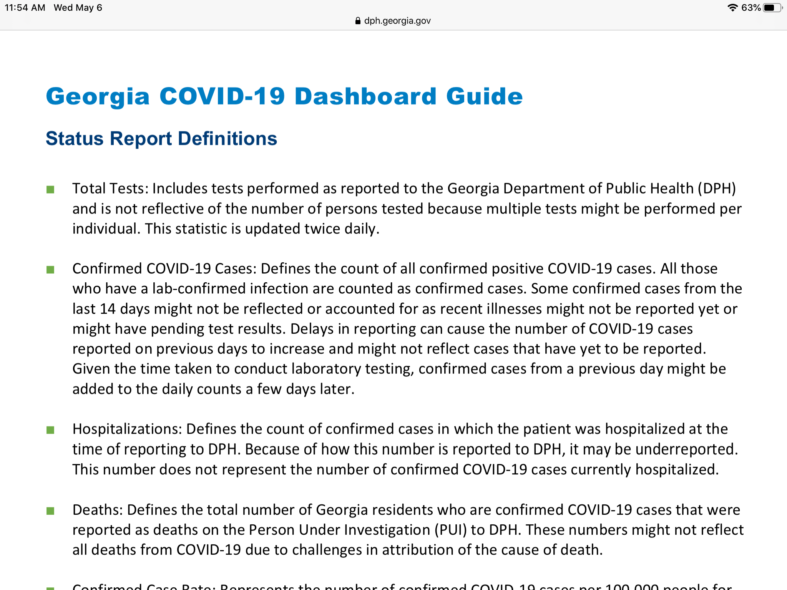

Ga total test number not unique tests - includes retesting
Issue number 371
tracyterrill opened this issue on May 6, 2020 at 11:56 am
so it’s not an accurate representation of total people tested. As far as I can tell the confirmed case number represents unique cases and not simply all tests that came back positive.

Comments
From: Quang Nguyen Sent: May 7, 2020 10:14 AM To: COVID19Tracking/issues Cc: tracyterrill , Author Subject: Re: [COVID19Tracking/issues] Ga total test number not unique tests - includes retesting (#371)
Thank you very much for letting us know! We are aware of the differences between total tests and unique people tested and are currently working internally to improve the reporting process given this information.
—You are receiving this because you authored the thread.Reply to this email directly, view it on GitHub, or unsubscribe.
Thank you very much for letting us know! We are aware of the differences between total tests and unique people tested and are currently working internally to improve the reporting process given this information.